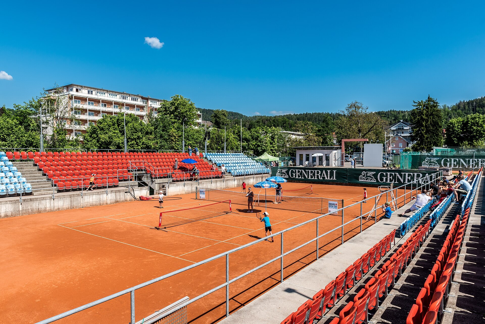

Узбекистан возобновит международный теннис: ATP и WTA вернутся с 1 октября
Указ президента от 21 сентября предписывает возобновить турниры ATP, WTA и ITF. К 2030 году страна планирует 3000 регулярных игроков, 200 тренеров и место в пятёрке лучших в Азии.

Согласно указу президента Узбекистана от 21 сентября 2026 года, в стране возобновят международные теннисные турниры. С 1 октября 2026 года соревнования ATP, WTA и ITF будут проводиться регулярно.
Какие турниры вернутся
Планируются международный Uzbekistan Open, мужской ATP Challenger, Кубок Узбекистана (юниоры и взрослые) и национальные чемпионаты. Турниры уровня ATP в Узбекистане последний раз проходили в 2002 году, а WTA Tashkent Open — с 1999 по 2019 год, последний раз в сентябре 2019 года.
Цели к 2030 году
К 2030 году число регулярных игроков планируется довести до 3000, тренеров — до 200; конечная цель — войти в пятёрку лучших теннисных стран Азии. С 1 января 2027 года теннис будут преподавать в 1–4 классах на уроках физкультуры.
Финансирование
Расходы на турниры и призовые будут покрываться за счёт благотворительных пожертвований. С 1 января 2027 года корты перейдут на самофинансирование; нерентабельные могут быть переданы частным инвесторам. Сэкономленные бюджетные средства пойдут на витамины, спортивную форму и инвентарь.
Призовые
На Азиатских играх за золотую медаль спортсмен получит 25 000 долларов, тренер — 10 000. За серебро — 12 500 и 5 000, за бронзу — 6 250 и 2 500 долларов.